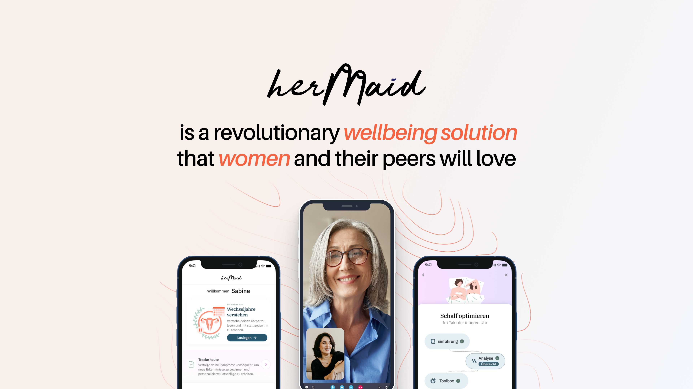
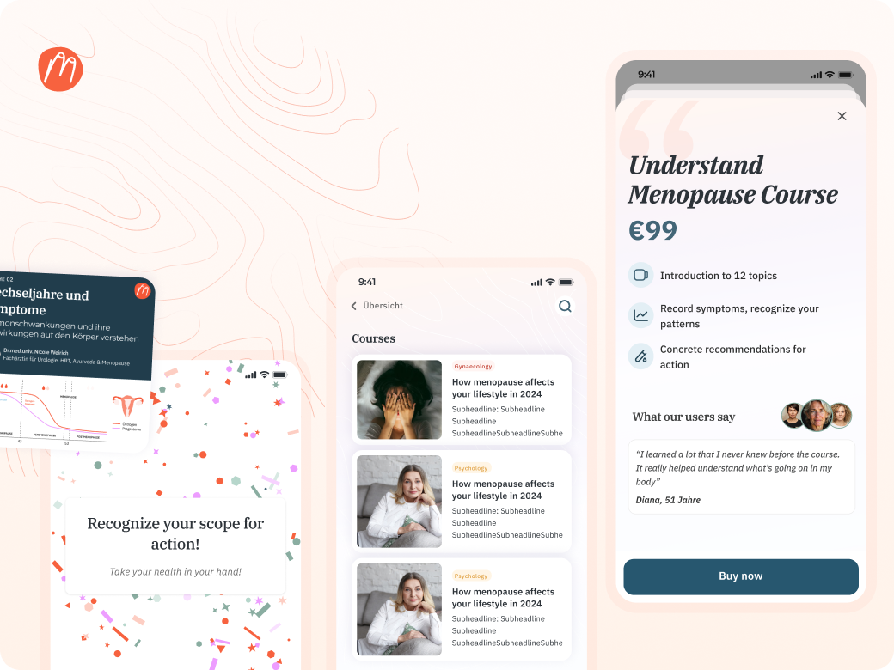
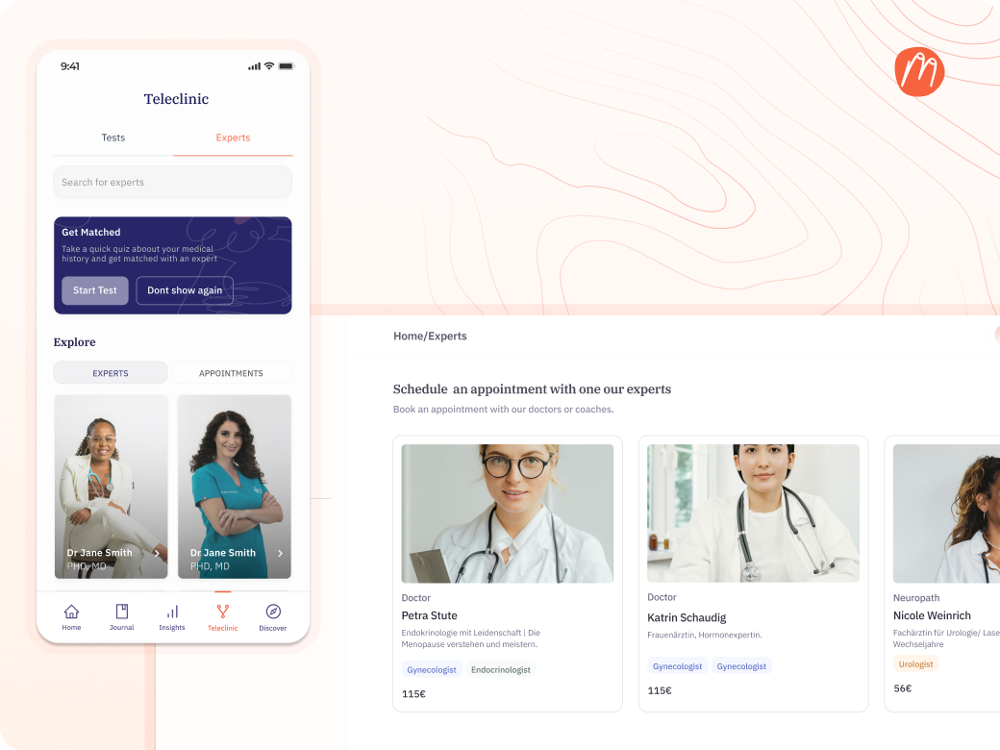
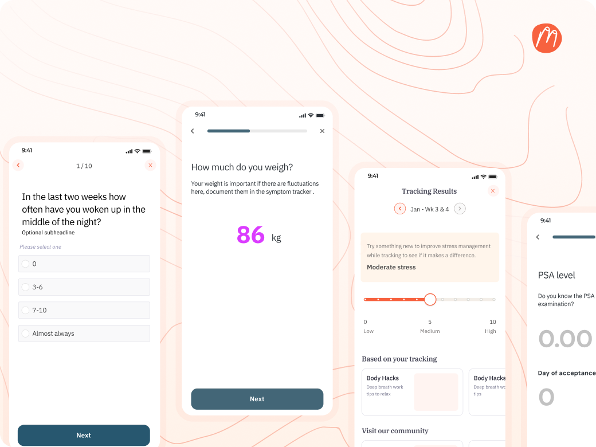
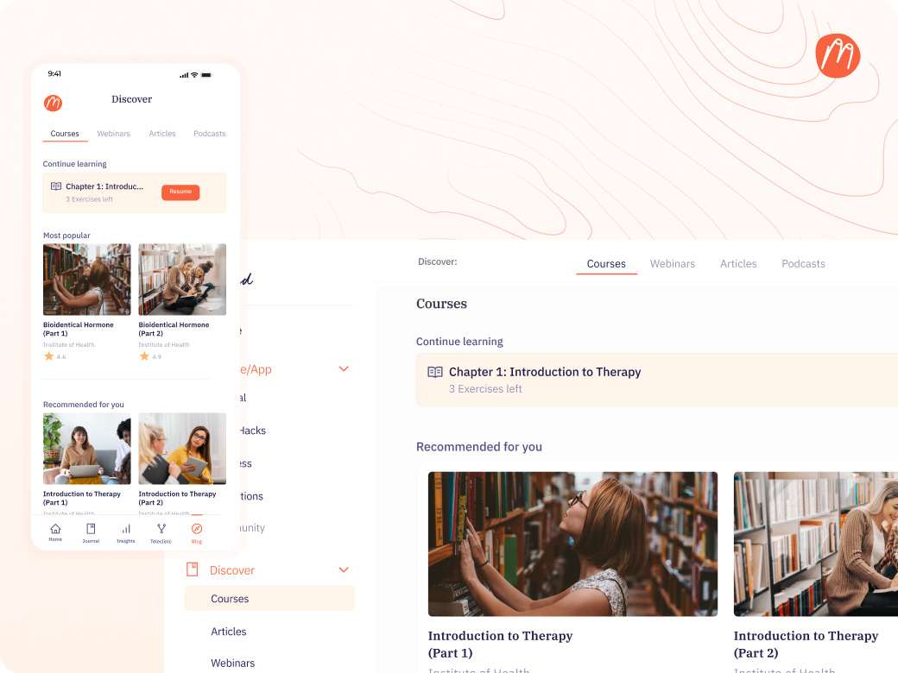
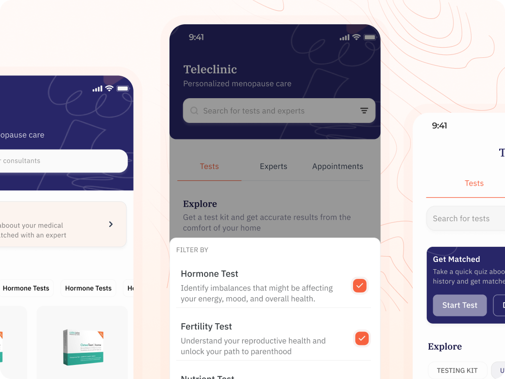

Hermaid is a fem-tech health company in Germany focused on menopause care. The product needed to bring together test kits, specialist consultations, symptom tracking, and structured courses into one coherent experience. I helped figure out how.

Menopause affects every woman eventually, but it's still one of the most overlooked areas of healthcare. Symptoms like exhaustion, mood swings, and hormonal shifts can drastically affect daily life. Most women deal with them alone.
Hermaid wanted to change that by giving women access to specialists, self-guided courses, and symptom tracking tools. The vision was clear. The challenge was making all of these pieces feel like one product instead of four separate things bolted together.
of women report that menopause symptoms significantly impact their quality of life. Most go through it without any structured support.
The platform had a lot of moving parts, and each one served a different need. The question wasn't what to build. It was how to make everything feel connected.
A user might come in through a course, a test kit, or a specialist booking. Each path needed to lead somewhere coherent, not a dead end.
This isn't a fitness app. Women are dealing with real health concerns. Every interaction needed to feel safe, clear, and never clinical in a cold way.
Patients needed simplicity and reassurance. Specialists needed structure and efficiency. One platform had to serve both without compromising either.
When I joined, the team had built individual features but hadn't figured out how they all connected. Test kits existed as a concept. Specialist consultations were planned. Symptom tracking was in progress. Courses were being developed. But there was no clear picture of how a user would actually move through all of this.
I led brainstorming sessions to map out how these parts should relate to each other. The key insight was that the teleclinic should be the connective tissue. Everything else feeds into it or flows from it. A symptom tracker generates data that informs your specialist conversation. A test kit gives results that your specialist reviews. A course gives you context so you show up to appointments with better questions.
Once we had that framing, I pushed for a mobile-first approach. Most users aren't sitting at a desk when they need health support. They're at home, on their phone, between other things. The experience had to meet them there.
Five core pieces designed to work as one system, not five separate products.
Free and paid courses covering symptom management to hormone therapy. Women learn at their own pace and come to specialist appointments better informed. Progress syncs between web and mobile.

The core of the platform. Users browse specialists by type, book appointments, or get matched through a medical history quiz. The quiz asks targeted questions about symptoms and history, then routes users to the right specialist instead of making them figure it out themselves.

Users log symptoms and monitor changes in their health. The tracker surfaces patterns like stress levels or sleep disruption trends and connects them to recommendations. This data also becomes something users can share with their specialist during a consultation.

The dashboard adapts to each user type. Women tracking symptoms see one view. Specialists managing patients see another. Corporate wellness programs see a third. The web version gives full access. The mobile version focuses on what you need right now.

Users order test kits, track upcoming tests, and get results directly in the app. Results connect to their specialist profile so consultations start from data, not guesswork.

It wasn't just the patient experience that needed work. Specialists who signed up were getting stuck. They'd land on the dashboard and not know what to do first. The onboarding required too many steps with no clear guidance.
Users had the opposite problem. They could see that specialists existed on the platform, but the booking flow wasn't clear. People didn't understand how to get from browsing to a scheduled appointment.
I led the redesign of both sides. For specialists, I restructured onboarding to give clear next steps from the moment they log in. For users, I simplified the booking path and made the "Get Matched" flow more prominent so people who weren't sure which specialist to pick had an obvious starting point.
"I didn't know where to start when I landed on the dashboard. Now I do."
Specialist feedback after the redesign
Trust in healthcare products isn't earned through polish. It's earned through clarity.
"She transformed our entire design system. Esosa designed some of our key screens, such as the Anamnesis Onboarding and the upcoming Lab Testing screens. Her work has defined how everything should look and behave on our platform."
Founder and CEO, Hermaid
This project pushed me to think differently about what "complex" means. In fintech, complexity comes from multi-stakeholder workflows and regulatory constraints. In healthtech, it comes from sensitivity. You're designing for people who are vulnerable, unsure, and often dealing with something they've never talked about openly before.
The most useful thing I did wasn't designing any single screen. It was sitting with the team and mapping how test kits, courses, symptom tracking, and specialist consultations should connect into one flow instead of existing as separate features. That structural work shaped everything that followed.
The specialist onboarding redesign reinforced something I keep coming back to. If the people providing the service can't figure out the tool, the people receiving the service never will either.